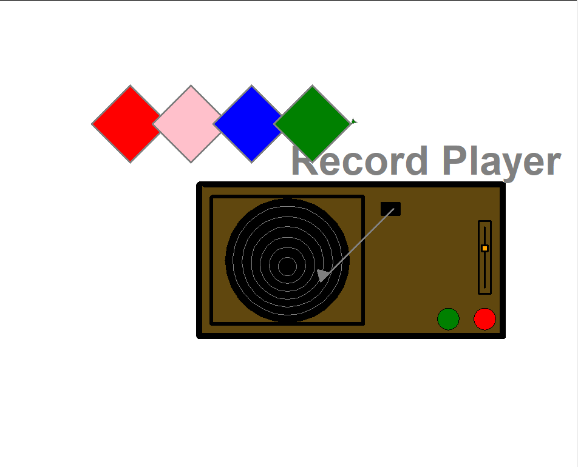
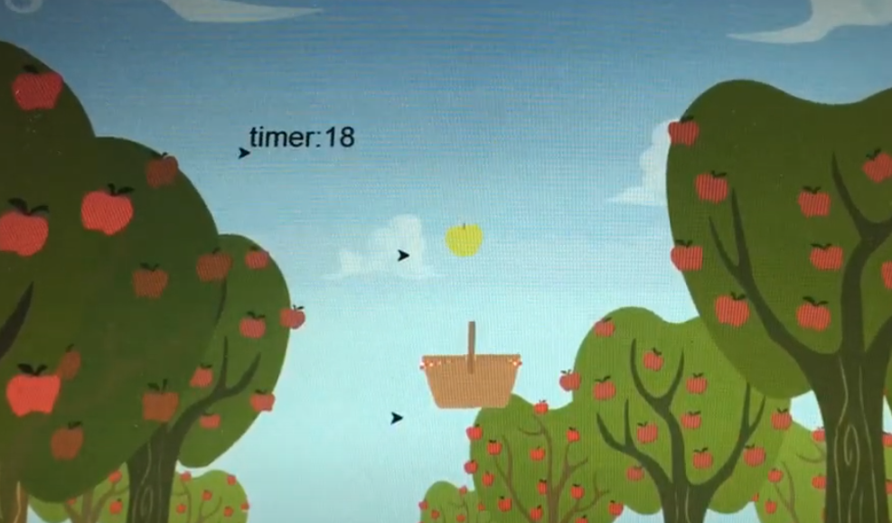
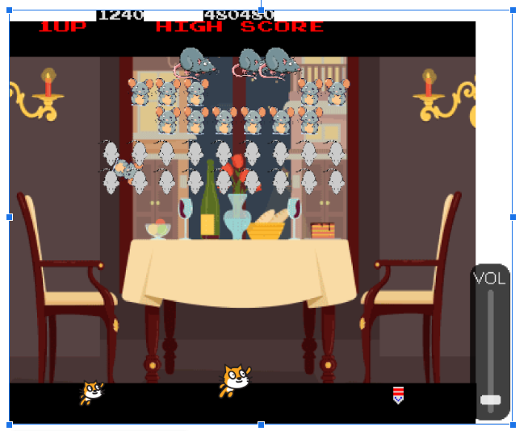
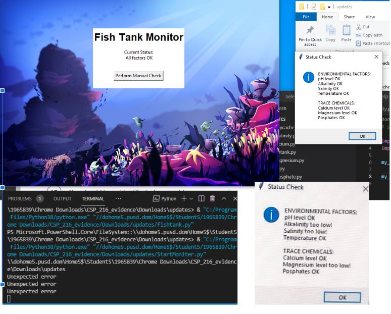
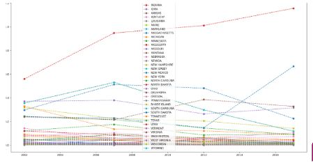

PLTW 1.1.9 project Record Player!
This is my 1.1.9 project. I made a record player that changes the albumn color based on which one you select. This record player plays the color of whatever albumn color you chose. I made this project with a partner using 4 loops, condtionals, and iterations. This is my 1.1.9 project!
PLTW 1.2.5 project Apple Sorter
This is my 1.2.5 project. I made a game called Apple Sorter and you can move your basket from left to right that catches apples. If you catch the wrong apple or drop 3 apples then you lose or if time runs out. I made this project along side Samantha and Ryoka using loops, conditionals, iterations and many other methods. This is my 1.2.5 project!
Scratch Project: Edit on Galaga!
This is my Scratch project I made along with my parter Nathan. We used our 7 requirements to make and edit this fun knockoff on Galaga. This is a fun and exciting game. I hope you enjoy!
Fishtank Project
This is our fishtank project and we had to find out where the phising was happening. Me and my partner fixed the code and changed the return #'s to make it so that the fishtank showed OK levels in the features of what needed the fishtank to be sustainable. This is my Fishtank Project I made alonside Ryoka.
3.1.6 project

This is our project of the graph that shows our #'s of things!
3.2.4 Project
We used the data to show the bee's honey propduction and production behavior!